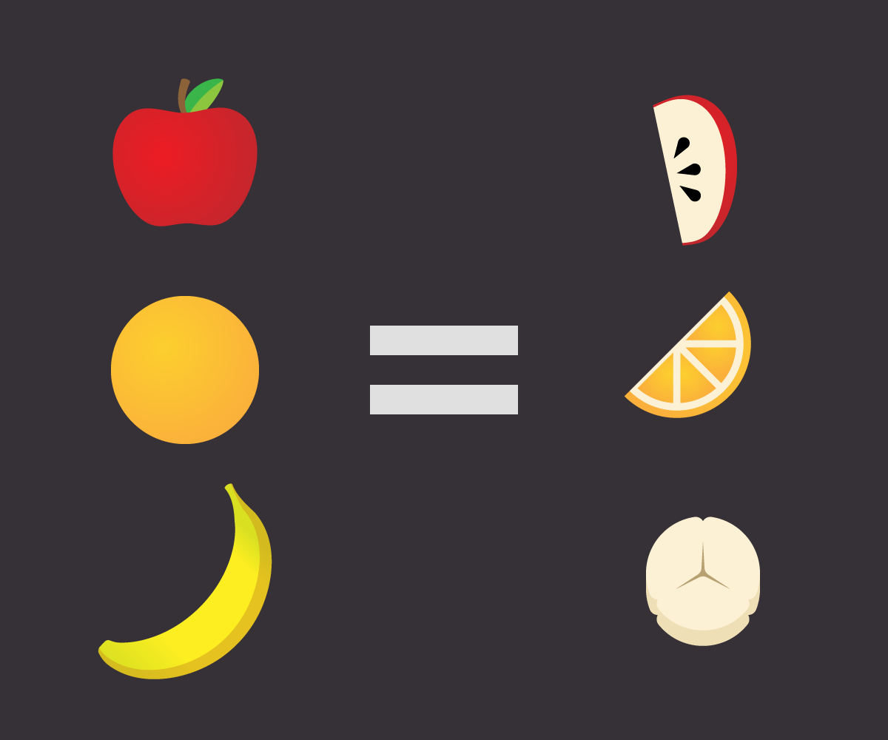
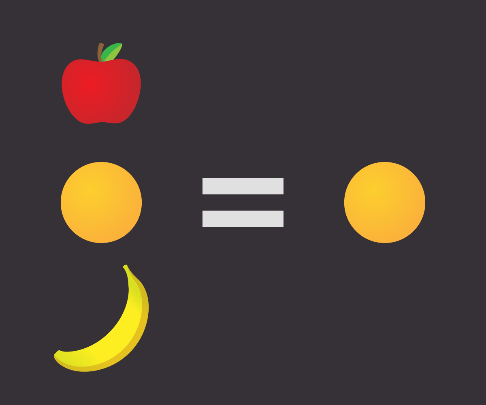

<!doctype html>
<html lang="en">

    <head>
        <meta charset="utf-8">

        <title> Higher Order Functions </title>

        <meta name="description" content="A framework for easily creating beautiful presentations using HTML">
        <meta name="author" content="Khalid">

        <meta name="apple-mobile-web-app-capable" content="yes">
        <meta name="apple-mobile-web-app-status-bar-style" content="black-translucent">

        <meta name="viewport" content="width=device-width, initial-scale=1.0, maximum-scale=1.0, user-scalable=no, minimal-ui">

        <link rel="stylesheet" href="css/reveal.css">
        <link rel="stylesheet" href="css/theme/black.css" id="theme">

        <!-- Code syntax highlighting -->
        <link rel="stylesheet" href="lib/css/zenburn.css">

        <!-- Printing and PDF exports -->
        <script>
         var link = document.createElement( 'link' );
         link.rel = 'stylesheet';
         link.type = 'text/css';
         link.href = window.location.search.match( /print-pdf/gi ) ? 'css/print/pdf.css' : 'css/print/paper.css';
         document.getElementsByTagName( 'head' )[0].appendChild( link );
        </script>

        <!--[if lt IE 9]>
            <script src="lib/js/html5shiv.js"></script>
        <![endif]-->
    </head>

    <body>

        <div class="reveal">

            <!-- Any section element inside of this container is displayed as a slide -->
            <div class="slides">

                <section>
                    <section data-markdown>
                        <script type="text/template">
                            ## Levelling Up with Higher Order Functions
                            </img>
                        </script>
                    </section>

                    <section data-markdown>
                        <script type="text/template">
                            ## Khalid
                            <ul>
                                <li class="fragment">Economist -> Entrepreneur -> Programmer (hobbyist) </li>
                                <li class="fragment">Sabbatical -> Spent 3 months at <a href="http://recurse.com">the Recurse Center</a> in NYC</li>
                                <ul>
                                    
                                    <li  class="fragment">Writer's retreat for programmers </li>
                                </ul>
                        </script>
                    </section>

                    <section data-markdown>
                        <script type="text/template">
                            ## What is a higher order function?
                            <ul>
                                <li class="fragment"> Function that takes or returns a function </li>
                                <li class ="fragment"> Map, Reduce, Filter </li>
                            </ul>
                        </script>
                    </section>

                    <section data-markdown>
                        <script type="text/template">
                            </img>
                        </script>
                    </section>

                    <section data-markdown>
                        <script type="text/template">
                            ## Map
                            </img>
                        </script>
                    </section>

                    <section data-markdown>
                        <script type="text/template">
                            ## Filter
                            </img>
                        </script>
                    </section>

                    <section data-markdown>
                        <script type="text/template">
                            ## Reduce
                            </img>
                        </script>
                    </section>

                    <section data-markdown>
                        <script type="text/template">
                            ## Reduce
                            </img>
                        </script>
                    </section>

                    <section data-markdown>
                        <script type="text/template">
                            ## Map + Reduce
                            </img>
                        </script>
                    </section>

                    <section data-markdown>
                        <script type="text/template">
                            ## Show us some code!
                        </script>
                    </section>

                    <section data-markdown>
                        <script type ="text/template">
                            ## Resources
                            <ul>
                                <li class="fragment"> Introduction to Functional Programming by Mary Rose Cook</li>
                                <p>https://codewords.recurse.com/issues/one/an-introduction-to-functional-programming</p>
                                <ul>
                        </script>
                    </section>

                    <section data-markdown>
                        <script type ="text/template">
                            ## Credits
                            <ul>
                                <li class="fragment"> Sal Becker - Recurse Center Alum </li>
                                <li class="fragment"> Source of Fruit Diagrams: http://atendesigngroup.com/blog/array-m </li>
                                <li class="fragment"> Map Reduce Sandwich: @tgrall</li>
                                <ul>
                        </script>
                    </section>

                    <section data-markdown>
                        <script type="text/template">
                            ## That's it folks, thank you!
                            <p>https://github.com/Khaleed</p>
                        </script>
                    </section>
            </div>

        </div>

        <script src="lib/js/head.min.js"></script>
        <script src="js/reveal.js"></script>

        <script>

         // Full list of configuration options available at:
         // https://github.com/hakimel/reveal.js#configuration
         Reveal.initialize({
             controls: true,
             progress: true,
             history: true,
             center: true,

             transition: 'slide', // none/fade/slide/convex/concave/zoom

             // Optional reveal.js plugins
             dependencies: [
                 { src: 'lib/js/classList.js', condition: function() { return !document.body.classList; } },
                 { src: 'plugin/markdown/marked.js', condition: function() { return !!document.querySelector( '[data-markdown]' ); } },
                 { src: 'plugin/markdown/markdown.js', condition: function() { return !!document.querySelector( '[data-markdown]' ); } },
                 { src: 'plugin/highlight/highlight.js', async: true, callback: function() { hljs.initHighlightingOnLoad(); } },
                 { src: 'plugin/zoom-js/zoom.js', async: true },
                 { src: 'plugin/notes/notes.js', async: true }
             ]
         });

        </script>

    </body>
</html>
